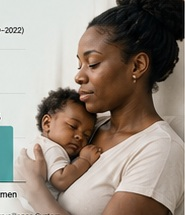
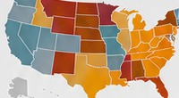
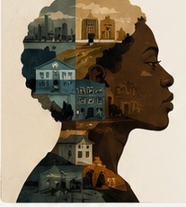

Voter Suppression
Black voters are 2–3x more likely
to be denied or challenged at the
ballot box.
Exposing injustice. Advancing equity.
Building power for Black communities.
Black voters are 2–3x more likely
to be denied or challenged at the
ballot box.
Black women are 2.6x more
likely to die from pregnancy-
related causes.
The median wealth of Black
households is about 1/10th
that of white households.
Black Americans are 5x more
likely to be incarcerated than
white Americans.
Maternal Health Disparities
Black women face preventable risks at every stage—from limited access to quality care to systemic bias in treatment.
Learn More →Deaths per 100,000 Live Births (2020–2022)
Source: CDC – Pregnancy Mortality Surveillance System
Voting Rights Under Attack
Laws across the country continue to restrict, dilute, and disregard the power of Black voters.
View Voting Rights Map →Since 2021


Understanding Systemic Inequality
Systemic inequality is built into the policies, institutions, and practices that shape our daily lives. White privilege refers to the unearned advantages that white people receive in a society structured to favor them—often invisibly and without intent. Recognizing these truths is the first step toward building a more just and equitable future.
School funding, discipline policies, and access to resources are inequitable.
Redlining and housing discrimination created generational gaps.
Hiring, pay, and promotion practices continue to perpetuate racial disparities.
Bias at every stage leads to unfair treatment and disproportionate outcomes.
Voices of Our Community
“I almost didn’t make it. Black mothers deserve better care, better support, and the right to live.”
— Jasmine R.“They tried to silence my vote. But our voices are stronger together.”
— Marcus T.“I’m fighting for a future where my students have equal chances.”
— Alana B.“Change happens when we stay informed and refuse to be indifferent.”
— Thomas L.Take Action Today
Stand up for policies that protect our rights and our communities.
Sign Now →Your support fuels research, education, and advocacy.
Donate Now →Explore data, reports, and tools to stay informed and empowered.
Explore Resources →Join our movement in your community and make an impact.
Get Involved →